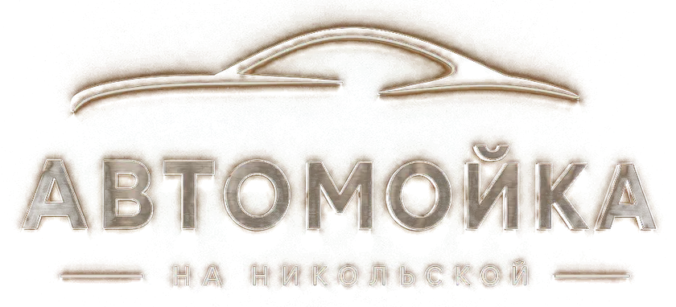
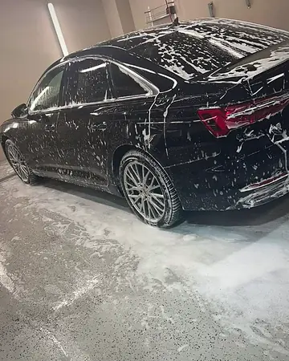
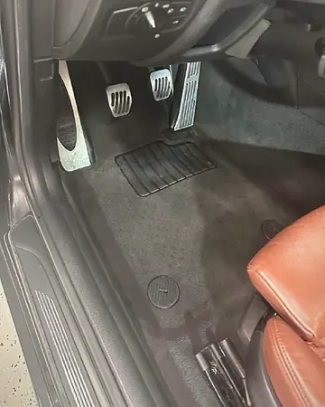
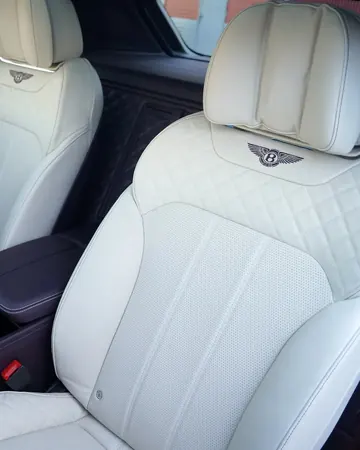
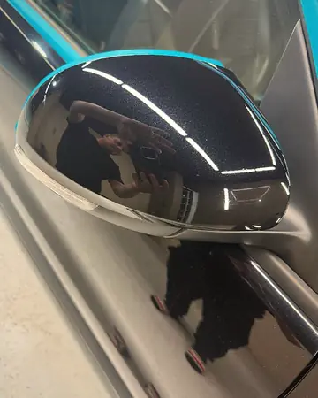
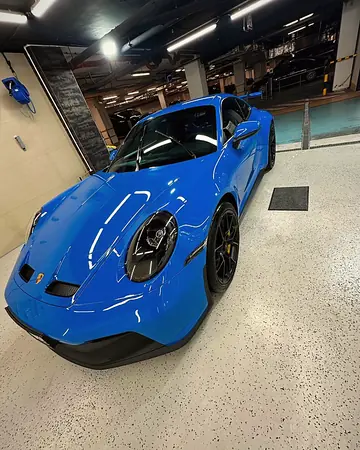
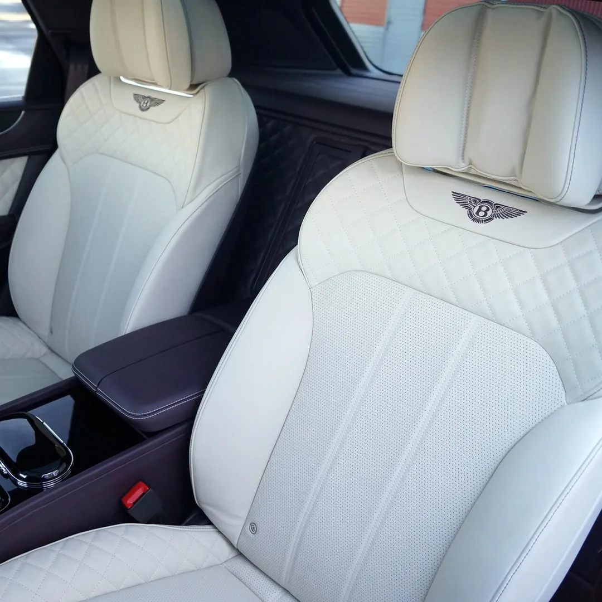
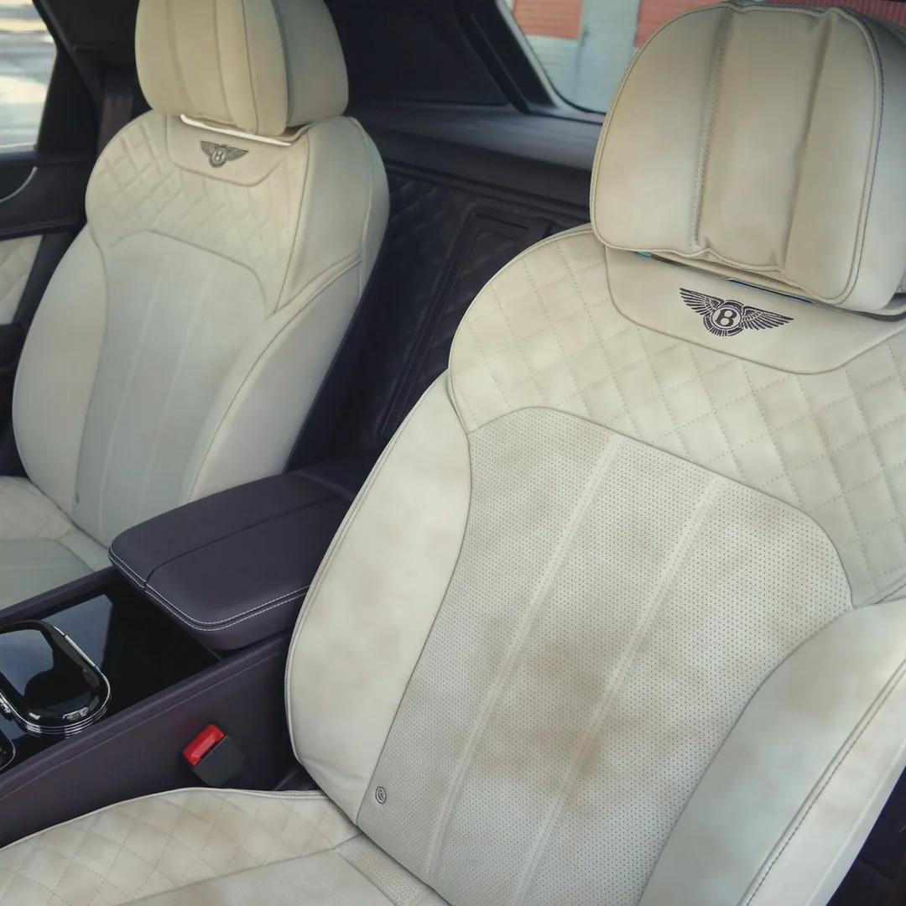

Химчистка салона
Полная химчистка и в подарок озонация — уберём посторонние запахи.
от 18 000 ₽
Бережный уход за вашим автомобилем
Бесплатная парковка во время мойки, химчистки и защиты кузова
До 31 октября включительно
Полная химчистка и в подарок озонация — уберём посторонние запахи.
от 18 000 ₽Оклейка зон риска или всего кузова: защита от сколов, реагентов и солнца.
от 63 750 ₽Цены «от» — для седана. Точную назовём по классу автомобиля.

Ручная трёхэтапная мойка «НАНО», комплекс с салоном

Пылесос, влажная уборка, стёкла, уход за кожей

−20%Комплексная или по элементам, озонация

Воск, полировка фар и деталей, полировка кузова

−15%Комплексы «От Никольской», керамика, полиуретановая плёнка
Реальные фото из нашего бокса и канала мойки. Нажмите, чтобы рассмотреть.
Деликатная очистка перфорированной кожи и строчки, затем питание и защита — без блеска и липкости.
Сдвиньте перегородку: вправо — «до», влево — «после».
Иллюстрация. Фото: Mike-fiesta, CC BY-SA 4.0; состояние «до» смоделировано.


«Мойка, где всё на своём месте: процесс выстроен, результат предсказуем, а ожидание — не потерянное время.»
Александр С. · Яндекс Карты
«Машину сделали как новую, кузов сияет, салон чистый, всё аккуратно.»
Елена Жихарева · Яндекс Карты
«Парковка бесплатная, водичку в салон кладут, цена доступная.»
Artyom Balyan · Яндекс Карты
«…рассказал, какие участки требуют особого внимания — например, битумные пятна на арках.»
Андрей · Яндекс Карты
«Со стройки вылили цемент на припаркованный автомобиль, думал машине хана, но нет.»
Никита Г. · Яндекс Карты
«…полировка и нанесение защитных составов – всё это сделало мой автомобиль не только чистым, но и защищённым.»
Алена Новикова · Яндекс Карты
«…за это время мы с семьей успели погулять по Красной площади.»
Сергей Ф. · Яндекс Карты
«Персонал — настоящие профессионалы, рассказали этапы мойки.»
artiom20.09 · Яндекс Карты
Фрагменты отзывов с Яндекс Карт, без правок.
Заезд с Большого Черкасского переулка, выезд — на Лубянскую площадь.